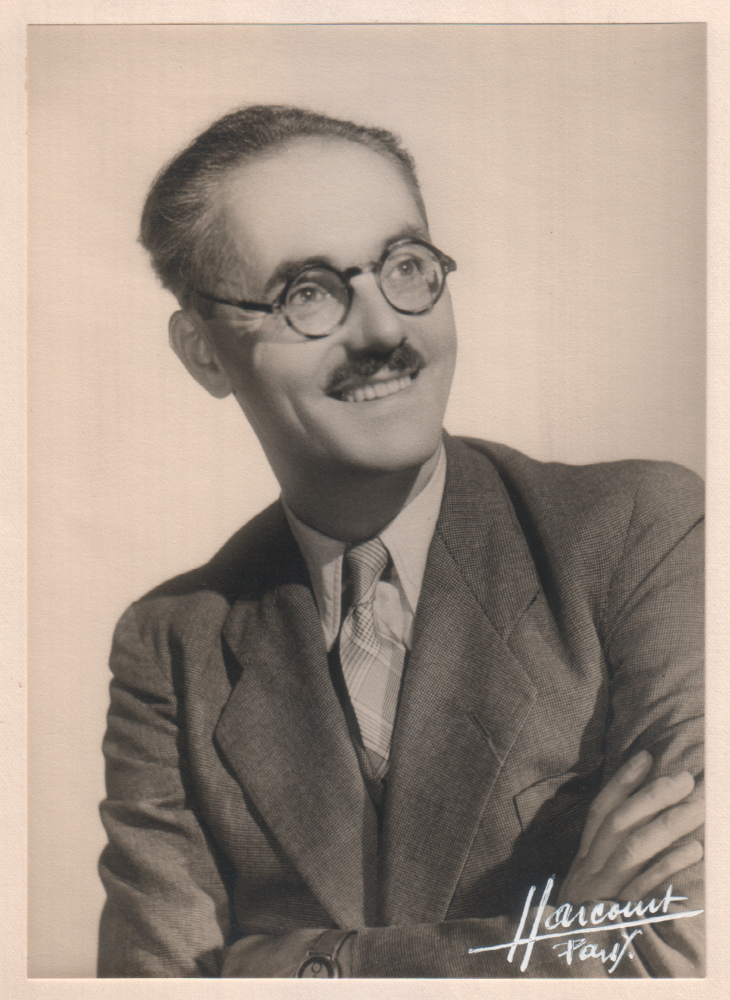
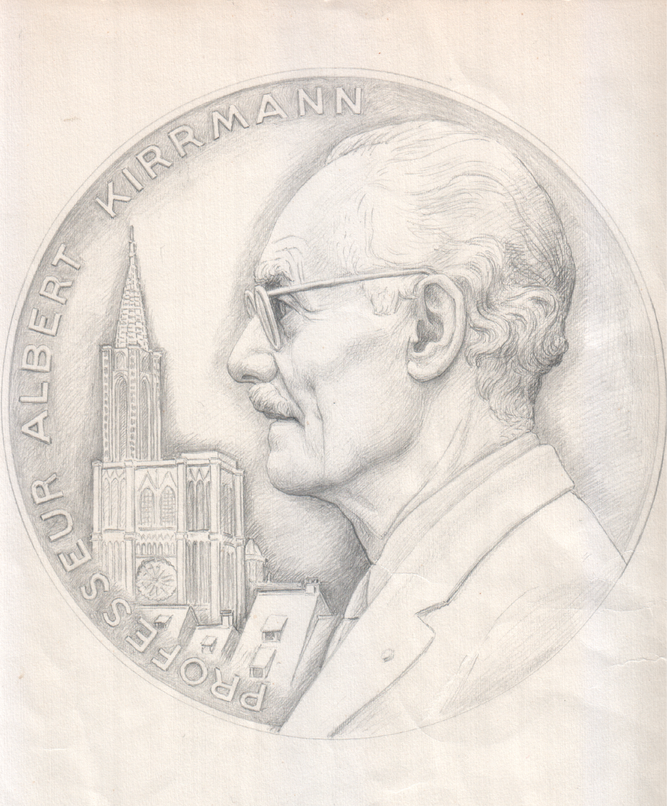

Formation académique
Albert Kirrmann, fils d’Emile Kirrmann, artisan ferblantier et d’Eugénie Mélanie Woelflin, est issu d’une famille de vieille souche strasbourgeoise profondément attachée à la France. Après des études secondaires au Gymnase protestant de Strasbourg, il commença en 1918 des études de médecine à l’Université de Strasbourg. En 1919, Kirrmann fut l’un des premiers Alsaciens admis sans concours à l’Ecole Normale Supérieure de la rue d’Ulm à Paris, comme son ami Alfred Kastler futur prix Nobel de physique.

Agrégé préparateur en sciences physico-chimiques en 1923 dans le laboratoire du professeur Lespiau, il soutint en 1928 une thèse intitulée : « Recherches sur les aldéhydes bromés et quelques-uns de leurs dérivés ». De cette époque date son intérêt pour la chimie théorique et les mécanismes réactionnels, concrétisé par une publication, avec son ami Charles Prévost : « Essai d’une théorie ionique des réactions organiques ».
En 1928-1929, une bourse Rockefeller lui permit de travailler à Munich, au laboratoire de Hans Fischer (prix Nobel de Chimie en 1931), où il s’initia à la biochimie (chimie des porphyrines). Ce séjour lui permit aussi de perfectionner sa connaissance de la langue et d’être attentif au contexte politique allemand.
Nommé en 1930 maître de conférences à l’Université de Bordeaux, Kirrmann y enseigna la chimie minérale et la chimie physique jusqu’en 1934, date à laquelle il fut nommé professeur titulaire de la chaire de chimie organique à l’Université de Strasbourg, poste qu’il occupa jusqu’en 1954. Il y succéda à Henri Gault qui, dès 1919, dans le cadre du rattachement de l’Université de Strasbourg à la France, avait contribué avec dynamisme à la rénovation de l’enseignement et de la recherche. Dans ce même souci d’innover et de diversifier les formations, Albert Kirrmann participa au développement et au rayonnement de l’Institut de Chimie, devenu l’Ecole d’ingénieurs Chimistes de Strasbourg ECS (actuelle Ecole Européenne de Chimie, Polymères et Matériaux de Strasbourg), grâce au succès de nombreuses promotions d’ingénieurs et de doctorants.
Résistance
En décembre 1938, il fut parmi les quarante personnalités strasbourgeoises signataires d’un « Manifeste pour la défense de la dignité humaine et de la civilisation, contre les propagandes raciales qui menacent l’unité du pays », publié dans les DNA le 9-12-1938 (après la nuit de Cristal).
En janvier 1939, il faisait partie des 128 universitaires strasbourgeois, dans l’adresse au Président de la République A. Lebrun, appelant à résister aux dictateurs fascistes (au lendemain des accords de Munich).
Mobilisé en 1939 comme lieutenant d’artillerie à l’Etat-Major de l’armée, il fut démobilisé en 1940 suite à l’armistice et rejoignit l’Université de Strasbourg, repliée à Clermont Ferrand en zone libre, ce qui était considéré d’emblée comme un acte de résistance à l’occupant.
Grâce à l’accueil des chimistes de Clermont, une rentrée put avoir lieu dès l’automne 1940, avec des professeurs dont Kirrmann en chimie organique, et des étudiants strasbourgeois. Malgré des circonstances difficiles, plusieurs thèses d’ingénieurs docteurs purent être soutenues.
Mais à Clermont, l’Université de Strasbourg n’était pas à l’abri du pouvoir allemand qui considérait le repli des Universitaires à Clermont comme une traîtrise. Après l’échec du rapatriement des Alsaciens en 1941, ces Deutschstämmige (personnes d’origine allemande=les Alsaciens), l’invasion de la zone libre en 1942 par les troupes allemandes accéléra « la liquidation de ce foyer particulier d’activités anti-allemandes » que Heinrich Himmler lui-même exigea du gouvernement de Vichy.
Une première rafle en juin 1943 visa surtout les étudiants logés à « la Gallia ». 37 furent déportés en camps de concentration, dont quelques-uns seulement échappèrent à la mort.
L’arrestation d’Albert Kirrmann par la Gestapo eut lieu lors de la grande rafle du 25 novembre 1943. Ce jour-là plus de 1200 étudiants et enseignants furent brutalement regroupés puis triés, sous l’oeil complice d’un certain Mathieu, un étudiant retourné par la Gestapo. Plus de 120 d’entre eux, en majorité des Strasbourgeois et des Juifs, furent transférés à la prison dite du « 92 », où certains subirent des interrogatoires musclés, soupçonnés d’appartenir à des réseaux de résistance.
Kirrmann faisait partie de ce groupe des 120 qui restèrent en prison à Clermont, avant d’être acheminés à Compiègne, puis déportés en février 1944 en Allemagne, en majorité à Buchenwald (Auschwitz pour les Juifs).
C’est à Compiègne qu’Albert Kirrmann, « modèle de droiture et de courage », proposa à la vingtaine d’Alsaciens présents les termes de ce qu’on a appelé « le serment de Kirrmann ». Il engageait ses compagnons, en tant qu’intellectuels germanophones, à rester groupés et solidaires pour s’adapter aux conditions difficiles qui les attendaient, pour tenir le coup, physiquement et moralement, afin de témoigner à leur retour de « l’enfer des camps ».
Avec 32 rescapés des différents camps, libérés entre avril et mai 1945, Albert Kirrmann contribua à la publication de ces témoignages strasbourgeois dans le précieux recueil : « De l’Université aux camps de concentration » publié aux éditions « Les Belles Lettres » dès 1947.
Dans l’un de ses articles intitulé « Buchenwald, la grande ville », il analysait la géographie sociale et politique de cette ville monstrueuse et révélait ainsi l’horreur inhérente au système concentrationnaire nazi. Son évocation de la vie au laboratoire de biochimie du Block 50, où sa qualité de Professor-Doctor reconnue lui permettait d’aider quelques compatriotes Français dans des « emplois protégés », illustre son approche critique des lois qui régissaient un univers hiérarchisé et mortifère caractérisé par les inégalités de chance de survie.
L'après-guerre
Après sa libération et son retour à Strasbourg, Albert Kirrmann reprit sa place, son enseignement et sa recherche, au sein de l’Université. Avec deux autres professeurs, il reprit possession des locaux de la rue Goethe, transformés et pillés pendant la guerre par les occupants nazis. Ils furent partiellement dotés avec du matériel scientifique récupéré en Allemagne par la mission du Général Koenig, secondé par Hubert Forestier, pour parer aux difficultés de fonctionnement.
Sur une photo du baptême de la première promotion de 26 diplômés ingénieurs de l’Ecole de Chimie, Kirrmann est aux côtés du Général de Lattre de Tassigny qui la parrainait. Il est également présent sur la photo de 24 diplômés de la promotion 1947, preuve de la vitalité retrouvée et d’une qualité de travail de l’Ecole, sur laquelle il veillait tout particulièrement.
Son élection comme doyen de la Faculté des Sciences (1947-1950) ne diminua en rien son intense activité scientifique. Guy Ourison lui succéda à son poste de chimie organique lorsqu’il quitta Strasbourg pour accéder à de nouvelles fonctions.
En 1955 il fut nommé directeur du Laboratoire de Chimie et directeur-adjoint de l’Ecole Normale Supérieure, tâche qu’il accepta tout en la jugeant « dure et exaltante ».
En effet, à côté de ses obligations d’administrateur, il continua à diriger un laboratoire très bien équipé comprenant plus d’une centaine de chercheurs.
En 1970 il prit sa retraite, mais continua jusque’à son décès à s’occuper des jeunes chercheurs de son laboratoire.

Officier de l’Instruction publique (1946), chevalier puis officier (1958) de la Légion d’honneur, il fut également commandeur dans l’Ordre des Palmes Académiques en 1957.
En 1974 il fut élevé à la dignité de Président d’honneur de la Société chimique de France, titre qui ne fut donné que 5 fois en 120 ans à qui n’a pas été président en exercice.
Divers prix ont couronné sa carrière scientifique :
Académie des sciences (Institut de France) :
- Prix Paul Marguerite de La Charlonie et médaille Berthelot (1943)
- Prix Henri de Parville – ouvrages de sciences (1948)
- Prix Jecker (1951)
Prix international des Trois physiciens (1970), honneur unique pour un chimiste.
Son apport scientifique est considérable avec plus d’une centaine de publications, réunies en un volume de 900 pages. Ses travaux accompagnent une évolution majeure de la chimie organique qui passe progressivement d’une approche essentiellement descriptive et synthétique, à une meilleure compréhension des mécanismes réactionnels.
Par son enseignement, ses recherches et les chercheurs qu’il a formés, il a contribué durablement au rayonnement de l’Université de Strasbourg et de la chimie française.
Plusieurs ouvrages pédagogiques ont marqué des générations de chimistes organiciens, dont :
- La chimie d’hier et d’aujourd’hui (1928)
- La chimie avant Lavoisier
- La science et ses applications (1933)
- Chimie organique (1952)
- Chimie organique (3 tomes), en collaboration avec J. Cantacuzène et P. Duhamel (1971-1975)
Homme de science exigeant et rigoureux, Albert Kirrmann était aussi un homme de conviction, charismatique, attaché à la justice, à la solidarité et à la transmission. Son parcours témoigne d’un engagement intellectuel et humain qui s’est poursuivi jusque dans les circonstances les plus tragiques de son existence.
Sources et bibliographie
Texte établi à partir de la notice en partie modifiée de Mathilde Brini (1993) :
- de la notice individuelle, 1954, conservée à l’Ecole Normale Supérieure;
- du bulletin de la Société des amis de l’ENS, n° 118, juin 1970, p. 8-13;
- du journal des élèves de l’ENSCS, 1975;
- du Déporté, 1975.
Des informations complémentaires ont été puisées à d’autres sources (familiales), parfois plus récentes.
Bibliographie
- De l’Université aux camps de concentration-Témoignages strasbourgeois Ed. Les Belles Lettres 1947
- Henri Margraff. Le serment de Kirrmann-Chronique d’une guerre ordinaire Auschwitz Buchenwald-Flossenburg Ed. Jérôme Do Bentzinger 2009
- Jean-Claude Bernier : il y a 70 ans déjà, les heures noires de la chimie strasbourgeoise dans « l’actualité chimique » octobre-novembre 2013 n° 378-379
- Sylvie Begin, Jean-ClaudeBernier, Daniel Guillon-Bernard Heulin : De l’institut de Chimie de Strasbourg à l’Ecole Européenne de Chimie, Polymères et Matériaux de 1919 à 2019 Ed. Jérôme Do Bentzinger.
- Elisabeth Crawford, Josiane Off-Nathan La science sous influence 1872-1945 Ed La Nuée Bleue 2005.
- M. Charpentier-Morizé : La chimie organique conduite par A. Kirrmann
- J-C Richez, Léon Strauss, Hélène Bigot : Résistantes et résistants strasbourgeois Ed. EDBH mai 2025.